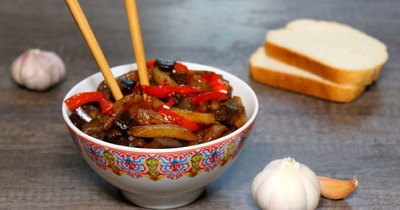

Китайские чисанчи

Ингредиенты
- Баклажаны - 0.5
- Картошка - 2 шт
- Болгарский перец - 0.5
- Чеснок - 1 зубч
- Соевый соус - 50 мл
- Сахар - 0.5 стол.л.
- Вода - 2 стол.л.
- Картофельный крахмал - 0.5 стол.л.
- Кунжутное масло - 20 мл
- Соль (используется только в первом шаге) - по вкусу
Рецепт приготовления
- Как сделать китайские чисанчи? Я использую замороженные кубики баклажана, поэтому достаю необходимую порцию, кладу ее в емкость и размораживаю при комнатной температуре. Если же используется свежий баклажан, то вначале вымойте его, нарежьте на небольшие кубики, сверху посыпьте их солью. Оставьте их так на 20-30 минут. Это делается чтобы они не горчили. Через полчаса промойте кубики под холодной водой и подсушите, чтобы не было лишней жидкости.
- Очистите клубни с помощью картофелечистки, нашинкуйте картофель брусками ножом либо на слайсере (так будет красивее и брусочки будут одинаковые). Промойте его, чтобы убрать лишний крахмал, обсушите. Выложите картофель на сковороду, влейте немного масла и обжаривайте картофель так, чтобы он был готов только наполовину, то есть жарьте его на почти максимальном огне. Так как плиты у всех работают по-разному, то следует огонь при необходимости корректировать.
- Болгарский перец очистите, удалите плодоножку и семечки. Нарежьте его продолговатыми кусочками. Картофель выложите со сковороды в глубокую емкость, на эту же сковороду выложите нарезанный болгарский перец, также, как и картофель обжарьте его на максимальном огне буквально 2-3 минуты. Затем переложите его в емкость с картофелем.
- При необходимости добавьте еще немного кунжутного масла и выложите на сковороду кусочки баклажана. Жарьте в течение 3-4 минут, после чего всыпьте в сковороду к баклажанам сахар и жарьте еще 1 минуту.
- Обратно на сковороду выложите доведенные до полуготовности перец и картофель, добавьте весь необходимый объем соевого соуса, продолжайте готовить блюдо еще 4 минуты.
- В небольшой емкости смешайте крахмал с водой, добавьте к овощам. Также на этом шаге добавьте измельченный зубчик чеснока, хорошо перемешайте ингредиенты. Тушите овощи еще в течение 5 минут.
Вернуться к списку блюд